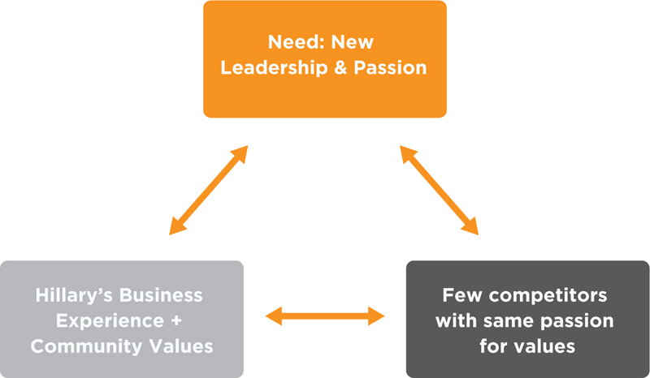
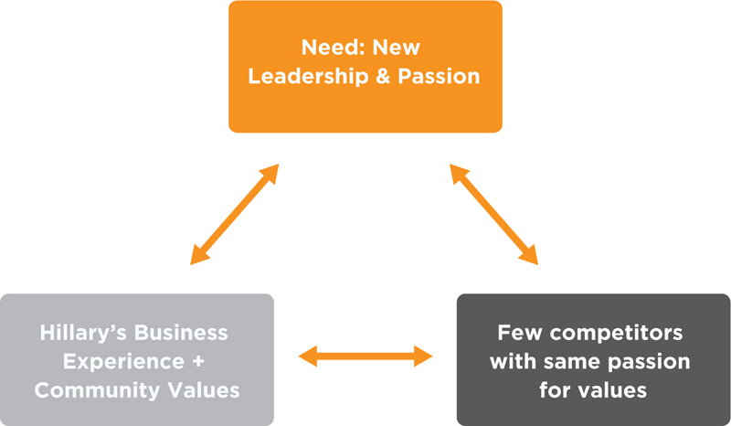
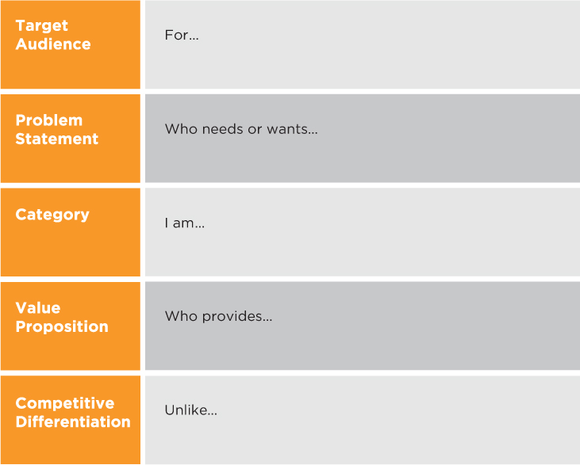
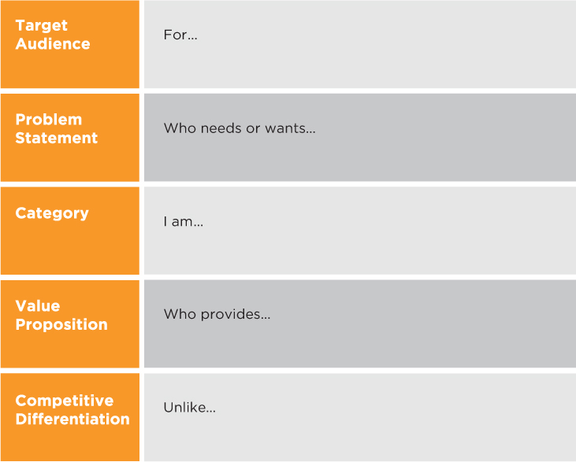

Step 1: Positioning
Position Yourself for Opportunities
Bob and Mike are software programmers in their fifties. Years ago, they were both at the top of their field in graphics software for the desktop.
Bob was confident his programming skills that got him to where he was today would carry him through to retirement. He was wrong. The technology landscape changed with mobile and browser-based computing. He was laid off from his job and could not find a new one because he was branded as “old school.”
Mike, however, constantly kept a sharp eye on maintaining his unique value to his field—that is, his cake. At different intervals in his career, he asked, “What are the big-picture trends in the industry, in technology and in my company? What can I do to take advantage of changes in my environment?” Mike learned about new technologies, developed relationships with leading technologists and gained a reputation as a visionary. When it came time to look for a new job, he got two excellent offers from leading technology companies.
Today, Mike is recognized at his company and in the industry as a leader in graphical web software. Unlike Bob, who is unemployed, Mike positioned himself for new opportunities.
What Is Positioning and Why Do It?
When people think of personal branding, they might think wardrobe, mannerisms and catch phrases that others can remember. These, however, are just the finishing touches—or icing on the cake. Effective personal branding goes much deeper. It starts with positioning—your cake foundation, or rational value.
Positioning Triangulation
One way to figure out your positioning goal is to explore the options through triangulation (Figure 2.1). That’s just a fancy term for a three-pronged model to understand whether there is an audience (an employer, a boss, a venture capitalist or a client) that values what you have to offer. This is basically what we do in positioning, but the triangulation model helps with understanding the dependencies. By iterating different scenarios in the triangulation model, you will find the best option for you before writing your positioning statement.
Remember Hillary Freeman, who wanted a seat on the Palo Alto City Council? The target audience need we identified was that many Palo Alto voters wanted new leadership and passion for their values. Hillary’s strengths and values were that she was a high-tech business executive who had demonstrated community values as a community and schools volunteer leader. We established that there was a need for a candidate with Hillary’s strengths and values, but then we had to see if other candidates (her competition) could fulfill the audience need. Her opportunity was that few, if any, candidates demonstrated her passion and grass-roots support across key constituencies: schools, library lovers, youth sports, YMCA and neighborhood groups. If we found that other candidates had the same messages and evidence that Hillary had, we would have had to change Hillary’s positioning goal.
Figure 2.2
Hillary Freeman Has a Competitive Positioning Opportunity
 

Pamela is another interesting example. She had spent the last few years as a marketing director for a drug company and had excellent credentials building her product brands and growing the business. However, she wanted to move away from marketing and get into the area of her passion: ensuring patient access to health care—specifically, her company’s therapeutic drugs. The good news was that there was less competition in this area versus marketing, and her graduate degree from a school of public health helped to distinguish her. The target audience need was real in that her company had significant resources dedicated to patient access and cared about this area. In the end, she positioned herself as an accomplished health care executive and patient access expert. With clarity on her goal and value, she had the confidence to have a frank talk with her boss about her career path.
The result? Her company created a new job for her that was tailored to her passions and talents. Within six months on the job, she was promoted to senior director. Pamela is an excellent example of how to best differentiate yourself for an opportunity by optimizing the triangulation of target audience need, your strengths and value, and competition.
Positioning Statement
The triangulation exercise has prepared you for writing your positioning statement, the first step in the BrandingPays System. This statement is a tool to help you to ensure that you have a unique and compelling value proposition for a particular target audience.
Remember that we “bake the cake, then ice it.” The cake is your positioning. This is the foundation for a strong brand. Without it, your brand would be all fluff, or icing—not very substantial or credible.
The positioning statement provides the foundation for developing your elevator pitch and key value messages for different audiences.
It will also provide input to the Brand Strategy Platform (chapter 4), where we put your cake and icing together.
Despite popular belief, your positioning statement is not your elevator pitch. lements of your positioning statement, however, will be used in your elevator pitch and key messages, which we’ll explore in chapter 3.
See Figure 2.3 for our positioning statement template. There are five positioning elements that we need to consider:
 

When applied to personal branding, you are the “product” in the positioning statement.